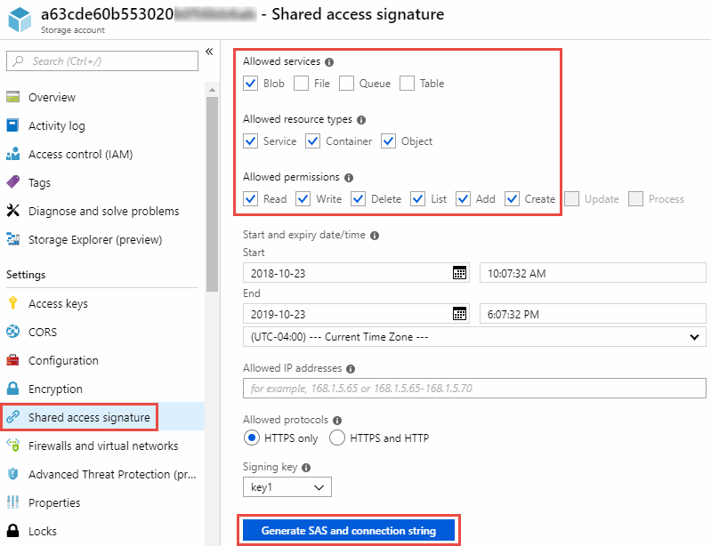

Dokumentationsänderungen beantragen
Dokumentationsänderungen beantragen In GitHub bearbeiten
In GitHub bearbeiten Leitfaden für Beitragende
Leitfaden für BeitragendeBereiten Sie die Quelle und das Ziel vor
Beitragende
Stellen Sie sicher, dass Ihre Quelle und Ihre Ziele die folgenden Anforderungen erfüllen.
Netzwerkbetrieb
-
Quelle und Ziel müssen eine Netzwerkverbindung mit der Datenmaklergruppe haben.
Wenn sich beispielsweise ein NFS-Server in Ihrem Datacenter befindet und sich ein Daten-Broker in AWS befindet, benötigen Sie eine Netzwerkverbindung (VPN oder Direct Connect) aus Ihrem Netzwerk zur VPC.
-
NetApp empfiehlt die Konfiguration von Quelle, Ziel und Datenmakler für die Verwendung eines Network Time Protocol (NTP)-Service. Die Zeitdifferenz zwischen den drei Komponenten darf 5 Minuten nicht überschreiten.
Zielverzeichnis
Wenn Sie eine Synchronisierungsbeziehung erstellen, können Sie mit Cloud Sync ein vorhandenes Zielverzeichnis auswählen und dann optional einen neuen Ordner in diesem Verzeichnis erstellen. Stellen Sie also sicher, dass Ihr bevorzugtes Zielverzeichnis bereits vorhanden ist.
Berechtigungen zum Lesen von Verzeichnissen
Um jedes Verzeichnis oder jeden Ordner in einer Quelle oder einem Ziel anzuzeigen, benötigt Cloud Sync Leseberechtigungen im Verzeichnis oder Ordner.
- NFS
-
Berechtigungen müssen auf der Quelle/dem Ziel mit uid/gid für Dateien und Verzeichnisse definiert werden.
- Objekt-Storage
-
-
Für AWS und Google Cloud muss ein Daten-Broker über Listenobjektberechtigungen verfügen (diese Berechtigungen werden standardmäßig bereitgestellt, wenn Sie die Installationsschritte des Daten-Brokers befolgen).
-
Für Azure, StorageGRID und IBM müssen die beim Einrichten einer Synchronisierungsbeziehung eingegebenen Anmeldedaten über Listenobjektberechtigungen verfügen.
-
- SMB
-
Die beim Einrichten einer Synchronisierungsbeziehung eingegebenen SMB-Anmeldeinformationen müssen über Listenberechtigungen für den Ordner verfügen.

|
Der Daten-Broker ignoriert standardmäßig die folgenden Verzeichnisse: .Snapshot, ~Snapshot, .Copy-Offload |
Amazon S3-Bucket-Anforderungen
Stellen Sie sicher, dass Ihr Amazon S3-Bucket die folgenden Anforderungen erfüllt
Unterstützte Speicherorte für Daten-Broker für Amazon S3
Für die Synchronisierung von Beziehungen, die S3-Storage beinhalten, ist ein Daten-Broker erforderlich, der in AWS oder in Ihrem Unternehmen implementiert ist. In beiden Fällen werden Sie von Cloud Sync aufgefordert, den Daten-Broker während der Installation mit einem AWS-Konto zu verknüpfen.
Unterstützte AWS-Regionen
Alle Regionen werden mit Ausnahme der Regionen in China unterstützt.
Berechtigungen für S3-Buckets in anderen AWS-Konten erforderlich
Beim Einrichten einer Synchronisierungsbeziehung kann ein S3-Bucket angegeben werden, der sich in einem AWS-Konto befindet, das nicht mit einem Daten-Broker verbunden ist.
"Die in dieser JSON-Datei enthaltenen Berechtigungen" Muss auf diesen S3-Bucket angewendet werden, damit ein Daten-Broker auf ihn zugreifen kann. Mit diesen Berechtigungen kann der Daten-Broker Daten in den und aus dem Bucket kopieren und die Objekte im Bucket auflisten.
Beachten Sie Folgendes zu den in der JSON-Datei enthaltenen Berechtigungen:
-
<BucketName> ist der Name des Buckets, der sich im AWS-Konto befindet und nicht mit einem Daten-Broker verknüpft ist.
-
<RoleARN> sollte durch eine der folgenden Komponenten ersetzt werden:
-
Wenn ein Datenvermittler manuell auf einem Linux-Host installiert wurde, sollte RoleARN der ARN des AWS-Benutzers sein, für den Sie bei der Implementierung eines Datenmakers AWS Zugangsdaten angegeben haben.
-
Wenn ein Datenvermittler mithilfe der CloudFormation-Vorlage in AWS implementiert wurde, sollte RoleARN der ARN der von der Vorlage erstellten IAM-Rolle sein.
Sie finden die Role ARN, indem Sie die EC2-Konsole aufrufen, die Data Broker-Instanz auswählen und auf der Registerkarte Beschreibung auf die IAM-Rolle klicken. Anschließend sollte die Seite Zusammenfassung in der IAM-Konsole angezeigt werden, die die Role ARN enthält.

-
Azure Blob Storage-Anforderungen
Stellen Sie sicher, dass Ihr Azure Blob Storage die folgenden Anforderungen erfüllt.
Unterstützte Data Broker-Standorte für Azure Blob
Ein Daten-Broker kann an jedem Standort residieren, wenn eine Synchronisierungsbeziehung Azure Blob-Storage umfasst.
Unterstützte Azure Regionen
Alle Regionen werden unterstützt, mit Ausnahme der Regionen China, US Gov und US DoD.
Verbindungszeichenfolge für Beziehungen, die Azure Blob und NFS/SMB umfassen
Wenn eine Synchronisierungsbeziehung zwischen einem Azure Blob Container und einem NFS- oder SMB-Server erstellt wird, muss Cloud Sync den Storage-Konto-Verbindungsstring bereitstellen:

Wenn Sie Daten zwischen zwei Azure Blob Containern synchronisieren möchten, muss die Verbindungszeichenfolge eine enthalten "Signatur für gemeinsamen Zugriff" (SAS). Außerdem haben Sie die Möglichkeit, eine SAS bei der Synchronisierung zwischen einem Blob Container und einem NFS- oder SMB-Server zu verwenden.
Der SAS muss den Zugriff auf den Blob Service und alle Ressourcentypen (Service, Container und Objekt) zulassen. Der SAS muss außerdem die folgenden Berechtigungen enthalten:
-
Für den Blob Quellcontainer: Lesen und auflisten
-
Für den Blob Zielcontainer: Lesen, Schreiben, Liste, Hinzufügen und Erstellen

|
|
Wenn Sie eine kontinuierliche Sync Beziehung implementieren möchten, die einen Azure Blob Container umfasst, können Sie eine regelmäßige Verbindungs-String oder eine SAS-Verbindungszeichenfolge verwenden. Wenn Sie eine SAS-Verbindungszeichenfolge verwenden, darf sie nicht so eingestellt werden, dass sie in naher Zukunft ablaufen wird. |
Azure Data Lake Storage Gen2
Wenn Sie eine Synchronisierungsbeziehung erstellen, die Azure Data Lake enthält, müssen Sie Cloud Sync den Verbindungsstring für das Storage-Konto angeben. Hierbei muss es sich um eine reguläre Verbindungszeichenfolge und nicht um eine SAS-Signatur (Shared Access Signature) handelt.
Azure NetApp Files-Anforderungen
Verwenden Sie den Premium- oder Ultra-Service-Level, wenn Sie Daten mit oder von Azure NetApp Files synchronisieren. Im Falle eines standardmäßigen Festplatten-Service-Levels können Ausfälle und Performance-Probleme auftreten.

|
Wenden Sie sich an einen Solution Architect, wenn Sie Hilfe bei der Ermittlung des richtigen Service Levels benötigen. Die Volume-Größe und die Volume-Ebene bestimmen den zu ererzielen Durchsatz. |
Box-Anforderungen
-
Um eine Synchronisierungsbeziehung mit Box zu erstellen, müssen Sie die folgenden Anmeldedaten angeben:
-
Client-ID
-
Kundengeheimnis
-
Privater Schlüssel
-
ID des öffentlichen Schlüssels
-
Passphrase
-
Unternehmens-ID
-
-
Wenn Sie eine Synchronisierungsbeziehung von Amazon S3 zu Box erstellen, müssen Sie eine Daten-Broker-Gruppe mit einer einheitlichen Konfiguration verwenden, bei der die folgenden Einstellungen auf 1 festgelegt sind:
-
Scanner-Parallelität
-
Die Anzahl Der Scannerprozesse Ist Begrenzt
-
Transferrer-Parallelität
-
Beschränkung Der Transferrer-Prozesse
-
Google Cloud Storage Bucket-Anforderungen
Stellen Sie sicher, dass Ihr Google Cloud Storage Bucket die folgenden Anforderungen erfüllt.
Unterstützte Data Broker-Standorte für Google Cloud Storage
Synchronisierungsbeziehungen, die Google Cloud Storage einschließen, erfordern einen Daten-Broker in Google Cloud oder vor Ort. Cloud Sync führt Sie beim Erstellen einer Synchronisierungsbeziehung durch den Installationsvorgang für Data Broker.
Unterstützte Google Cloud Regionen
Alle Regionen werden unterstützt.
Berechtigungen für Buckets in anderen Google Cloud-Projekten
Beim Einrichten einer Synchronisierungsbeziehung können Sie in verschiedenen Projekten aus Google Cloud Buckets auswählen, wenn Sie dem Servicekonto des Datenmaklers die erforderlichen Berechtigungen bereitstellen. "Erfahren Sie, wie Sie das Service-Konto einrichten".
Berechtigungen für ein SnapMirror Ziel
Wenn die Quelle für eine Sync-Beziehung ein SnapMirror-Ziel ist (schreibgeschützt), reichen die „Lese-/Listenberechtigungen“ aus, um die Daten aus der Quelle auf ein Ziel zu synchronisieren.
Google Drive
Wenn Sie eine Synchronisierungsbeziehung einrichten, die Google Drive enthält, müssen Sie Folgendes angeben:
-
Die E-Mail-Adresse eines Benutzers, der Zugriff auf den Standort des Google Drive hat, an dem Daten synchronisiert werden sollen
-
Die E-Mail-Adresse für ein Google Cloud-Dienstkonto, das über Berechtigungen zum Zugriff auf Google Drive verfügt
-
Ein privater Schlüssel für das Servicekonto
Um das Service-Konto einzurichten, befolgen Sie die Anweisungen in der Google-Dokumentation:
Wenn Sie das Feld OAuth Scopes bearbeiten, geben Sie die folgenden Bereiche ein:
-
https://www.googleapis.com/auth/drive
-
https://www.googleapis.com/auth/drive.file
NFS-Serveranforderungen
-
Bei dem NFS-Server kann es sich um ein NetApp System oder ein System eines anderen Anbieters handeln.
-
Der Dateiserver muss einem Datenmanager-Host ermöglichen, über die erforderlichen Ports auf die Exporte zuzugreifen.
-
111 TCP/UDP
-
2049 TCP/UDP
-
5555 TCP/UDP
-
-
NFS-Versionen 3, 4.0, 4.1 und 4.2 werden unterstützt.
Die gewünschte Version muss auf dem Server aktiviert sein.
-
Wenn Sie NFS-Daten von einem ONTAP System synchronisieren möchten, stellen Sie sicher, dass der Zugriff auf die NFS-Exportliste für eine SVM aktiviert ist (vserver nfs modify -vServer svm_Name -showmount aktiviert).
Die Standardeinstellung für showmount ist enabled ab ONTAP 9.2.
ONTAP-Anforderungen erfüllt
Wenn die Synchronisierungsbeziehung Cloud Volumes ONTAP oder einen On-Prem-ONTAP-Cluster umfasst und Sie NFSv4 oder höher ausgewählt haben, dann müssen Sie NFSv4-ACLs auf dem ONTAP-System aktivieren. Dies ist erforderlich, um die ACLs zu kopieren.
ONTAP-S3-Storage-Anforderungen
Wenn Sie eine Synchronisierungsbeziehung einrichten, die umfasst "ONTAP S3 Storage", Sie müssen Folgendes angeben:
-
Die IP-Adresse der mit ONTAP S3 verbundenen LIF
-
Der Zugriffsschlüssel und der Geheimschlüssel, den ONTAP für die Verwendung konfiguriert ist
Anforderungen an SMB-Server
-
Beim SMB Server kann es sich um ein NetApp System oder ein System eines anderen Herstellern beziehen.
-
Sie müssen Cloud Sync mit Berechtigungen auf dem SMB-Server bereitstellen.
-
Für einen SMB-Quellserver sind die folgenden Berechtigungen erforderlich: List and read.
Mitglieder der Gruppe Backup Operators werden von einem SMB-Quellserver unterstützt.
-
Für einen SMB-Zielserver sind die folgenden Berechtigungen erforderlich: List, Read und Write.
-
-
Der Dateiserver muss einem Datenmanager-Host ermöglichen, über die erforderlichen Ports auf die Exporte zuzugreifen.
-
139 TCP
-
445 TCP
-
137-138 UDP
-
-
SMB-Versionen 1.0, 2.0, 2.1, 3.0 und 3.11 werden unterstützt.
-
Gewähren Sie der Gruppe „Administratoren“ die Berechtigung „vollständige Kontrolle“ für die Quell- und Zielordner.
Wenn Sie diese Berechtigung nicht erteilen, dann hat der Datenvermittler möglicherweise nicht genügend Berechtigungen, um die ACLs in einer Datei oder einem Verzeichnis zu erhalten. In diesem Fall erhalten Sie den folgenden Fehler: "Getxattr error 95"
SMB-Einschränkung für versteckte Verzeichnisse und Dateien
Eine SMB-Einschränkung betrifft versteckte Verzeichnisse und Dateien bei der Synchronisierung von Daten zwischen SMB-Servern. Wenn Verzeichnisse oder Dateien auf dem SMB-Quellserver durch Windows ausgeblendet wurden, wird das verborgene Attribut nicht auf den SMB-Zielserver kopiert.
Verhalten bei SMB-Synchronisierung aufgrund von Beschränkungen bei der Groß-/Kleinschreibung
Die Groß-/Kleinschreibung des SMB-Protokolls wird nicht berücksichtigt, sodass Groß- und Kleinbuchstaben als identisch behandelt werden. Dieses Verhalten kann zu Fehlern beim Überschreiben von Dateien und Verzeichniskopie führen, wenn eine Synchronisierungsbeziehung einen SMB-Server umfasst und bereits Daten auf dem Ziel vorhanden sind.
Nehmen wir zum Beispiel an, dass eine Datei namens „A“ auf der Quelle und eine Datei mit dem Namen „A“ auf dem Ziel vorhanden sind. Wenn Cloud Sync die Datei namens „A“ in das Ziel kopiert, wird Datei „A“ von der Quelle mit Datei „A“ überschrieben.
Im Falle von Verzeichnissen, sagen wir, dass es ein Verzeichnis namens "b" auf der Quelle und ein Verzeichnis namens "B" auf dem Ziel. Wenn Cloud Sync versucht, das Verzeichnis namens „b“ auf das Ziel zu kopieren, erhält Cloud Sync eine Fehlermeldung, dass das Verzeichnis bereits vorhanden ist. Infolgedessen kann Cloud Sync das Verzeichnis „b“ immer nicht kopieren.
Der beste Weg, um diese Einschränkung zu vermeiden, ist sicherzustellen, dass Sie Daten in einem leeren Verzeichnis synchronisieren.